Не просто тетрадь с заданиями. Мы объясним, что происходит с тобой после расставания и что ты чувствуешь — и дадим практики, чтобы прожить эту боль, двигаться дальше и снова начать жить, даже если всё ещё любишь.
118 страниц · 14 дней пути · 80% объёма — упражнения
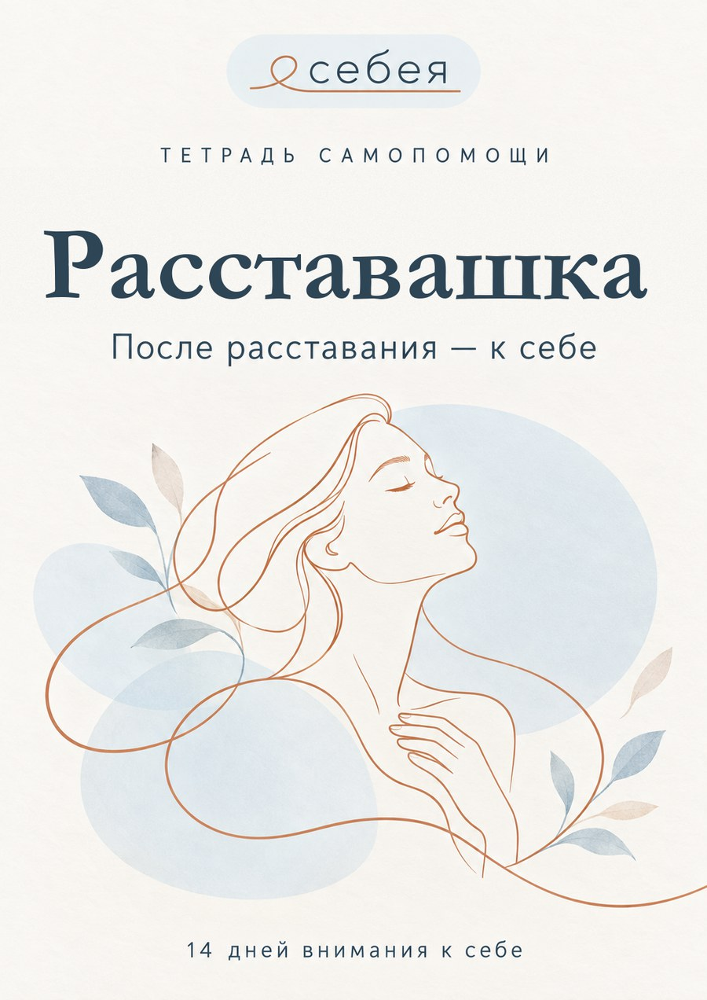
Если хотя бы два пункта про тебя — «Расставашка» создана для тебя
Навязчивые мысли, прокручивание диалогов и желание написать «в последний раз».
Открываю его соцсети по десять раз в день и ищу повод «случайно» встретиться.
Будущее кажется туманным, а всё, что радовало раньше, больше не приносит сил.
«Со мной что-то не так», «я недостаточно хороша» — знакомый внутренний голос.
Тяжёлые эмоции накрывают волной, и непонятно, как с ними быть дальше.
Страшно впустить кого-то нового — вдруг история повторится.
Что происходит с тобой в первые недели: почему эмоции переполняют и как не потерять себя.
Почему мысли возвращаются и как практики помогают справиться с навязчивым желанием вернуться.
Что стоит за привычкой открывать его соцсети — и как освободиться от неё.
Откуда берётся чувство неполноценности и практики, которые возвращают опору в себе.
Экологично проживаем тяжёлые эмоции и отпускаем их через письменные практики.
Формируем образ желаемого будущего и возвращаем себе свою жизнь.
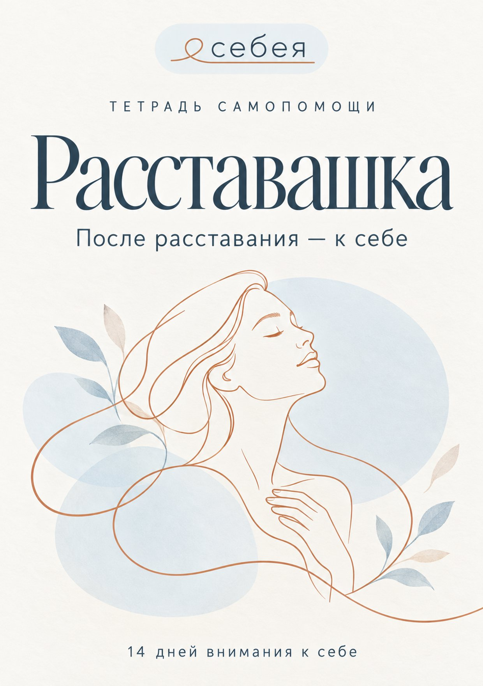
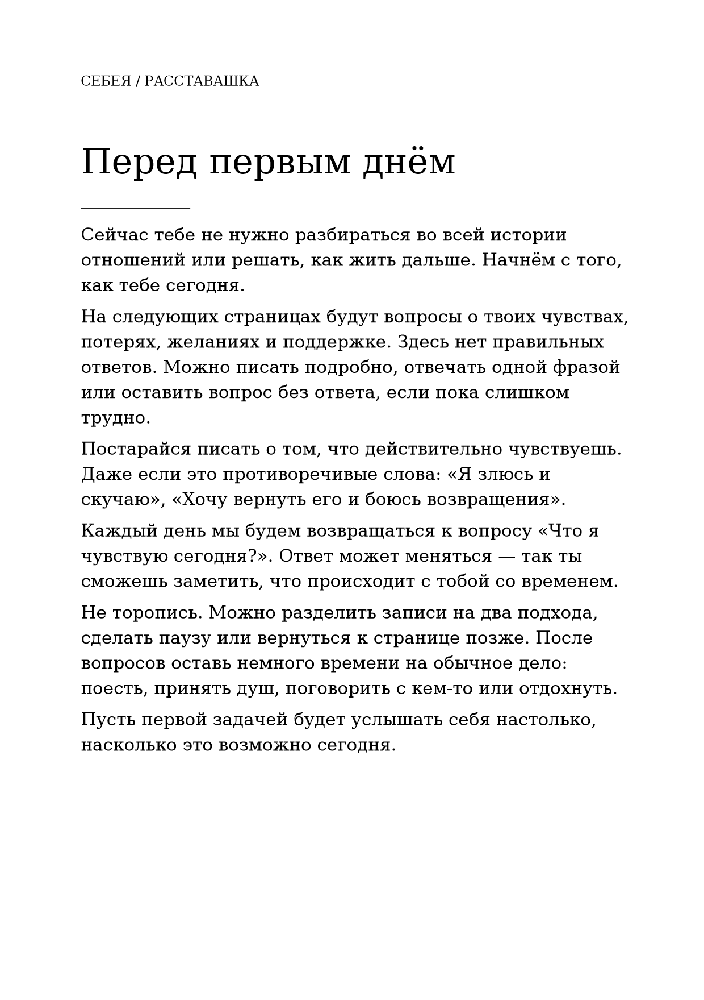
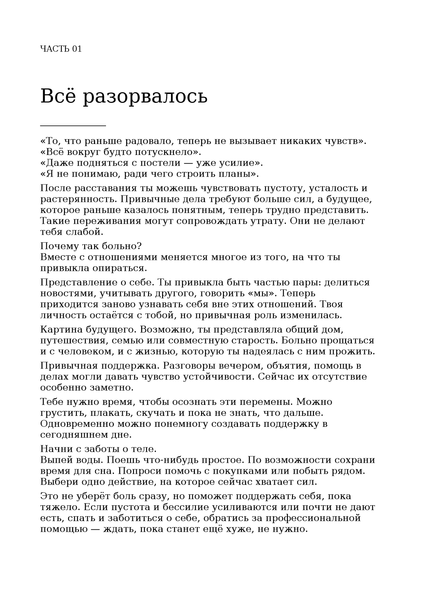
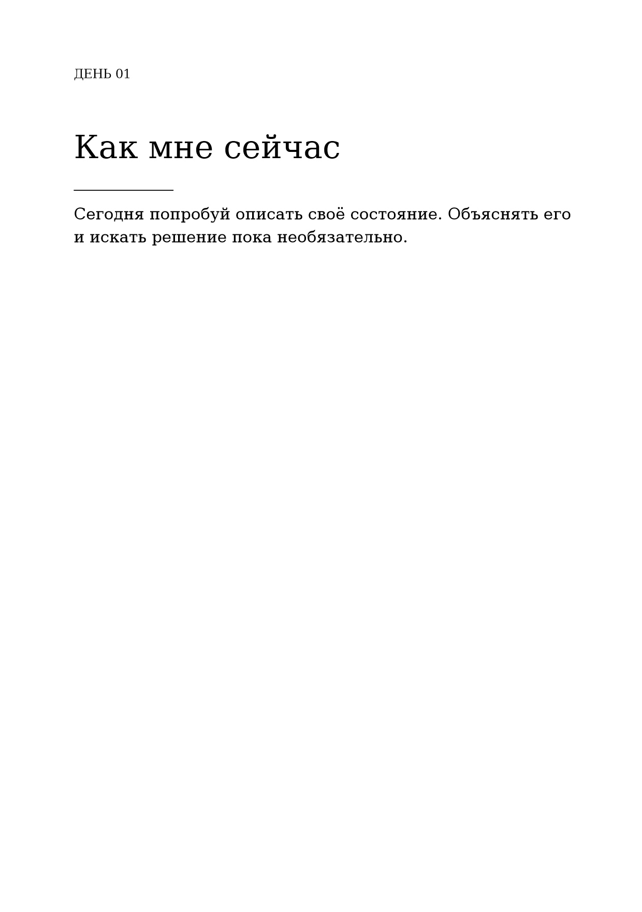
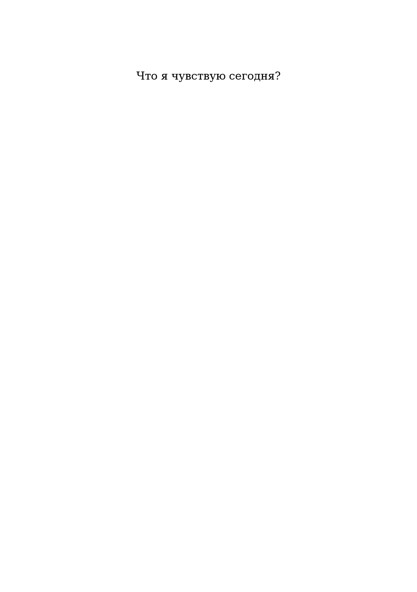
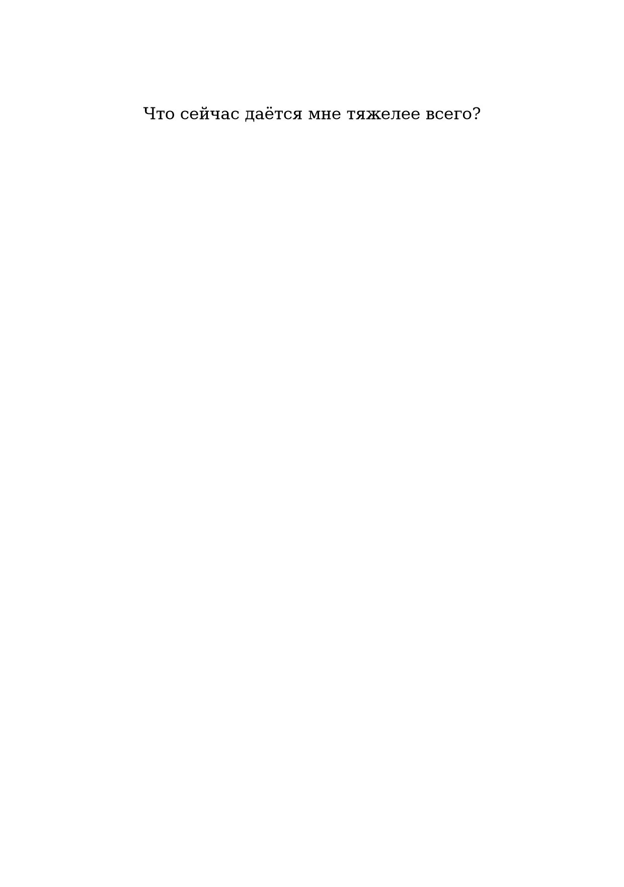
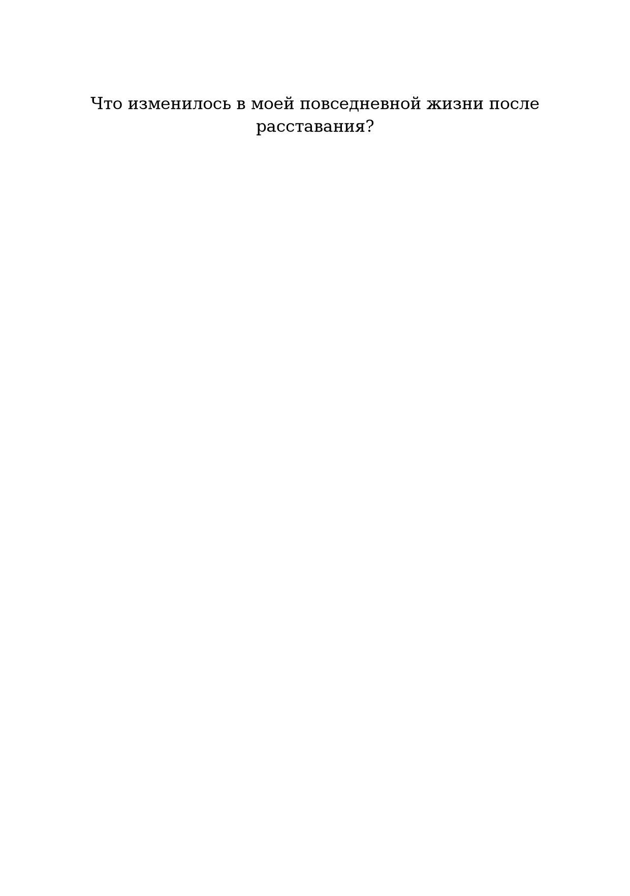
Из 118 страниц тетради большинство — упражнения: прожить обиду, вину и злость, отпустить и двигаться дальше.
Объясняем, что происходит с тобой после расставания и почему твои чувства нормальны.
Программа рассчитана на 14 дней: по 15–20 минут практики в день, в своём темпе.
Один и тот же путеводитель — в удобном для тебя виде
Один и тот же результат — но зачем платить в 15 раз больше?
Психотерапия незаменима при глубоких травмах и острых состояниях — такие ситуации мы не берёмся закрывать тетрадью. Но чтобы пережить расставание, прожить боль и вернуть себе себя — «Расставашка» даёт те же инструменты, что и психолог на сессиях, только в 15 раз доступнее.
Просто и быстро — PDF уже через минуту, печатную доставим по всей России
PDF-версия за 990 ₽ — сразу на почту. Или печатная тетрадь за 1 990 ₽ — с доставкой.
Безопасная оплата через ЮKassa: карты, СБП, электронные кошельки.
PDF придёт на email сразу после оплаты. Печатную тетрадь отправим за 1–2 дня: СДЭК или Почта России.
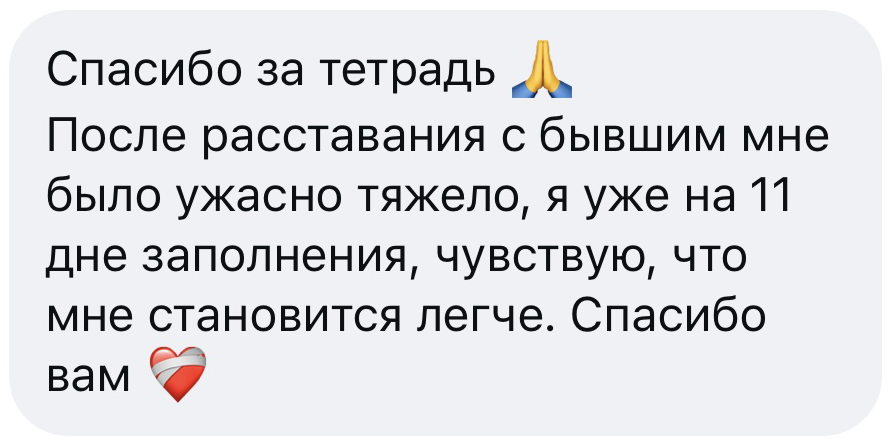
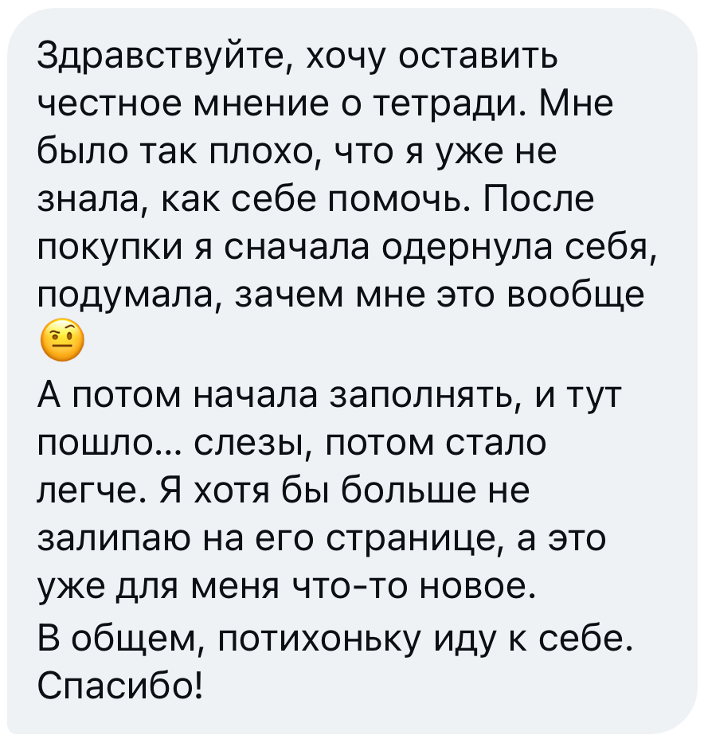
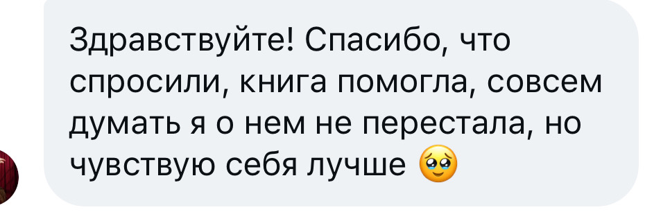
Это путеводитель. В каждой части мы коротко и понятно объясняем, что с тобой происходит после расставания и почему твои чувства нормальны, а дальше — практики, которые ты выполняешь сама. Всего в тетради 118 страниц, и 80% объёма — упражнения.
Содержание одинаковое: все 6 частей и все 118 страниц. PDF за 990 ₽ приходит на email сразу после оплаты — заполняешь с телефона или распечатываешь. Печатная тетрадь за 1 990 ₽ — это красивый физический путеводитель формата А5, который мы отправляем доставкой по России.
Оплата проходит онлайн через ЮKassa: банковской картой, через СБП или электронными кошельками. PDF приходит на email сразу после оплаты. Печатную тетрадь отправляем в течение 1–2 рабочих дней, доставка СДЭК или Почтой России занимает 2–7 дней.
Внутри — те же практики и техники, которые психолог даёт на сессиях по проработке расставания, только ты проходишь их сама и в своём темпе, за 1 990 ₽ вместо 30 000 ₽ за курс из 10 сессий. При этом при глубоких травмах и острых состояниях (депрессия, панические атаки) мы честно рекомендуем живого специалиста — путеводитель в таких случаях работает как поддержка, а не как замена терапии.
Программа рассчитана на 2 недели: по 15–20 минут практики в день. Но ты сама задаёшь темп — можно двигаться быстрее или медленнее, это твоя история.
Да. Практики работают и со «свежими» расставаниями, и с давними историями, которые всё ещё цепляют. Многие покупательницы говорят, что именно с «Расставашкой» наконец-то закрыли гештальт многолетней давности.
«Расставашка» бережно проведёт тебя от боли и растерянности к спокойствию — и к жизни, которая снова твоя.